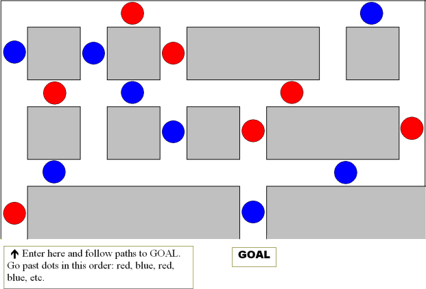

Easy Maze 2:

Click here for the solution.
This is another maze of mine that was usually found next to the large cornfield mazes. The paths were defined with hay bales, and in place of each dot, there was a pole on the side of the path and each pole was covered with a red or blue Wacky Noodle. It was called the Wacky Noodle Maze.
To Easy Maze 3.
Back to the home page.
|